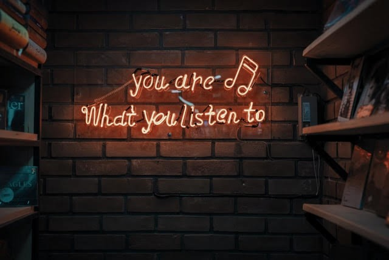

Ever given promotion a thought (outside of school or work)?
Come to think of it, we are always promoting something (look at our social feeds). Sometimes it’s the people we love (including ourselves),
sometimes it’s the things we enjoy, and sometimes it’s the places we visit. 👀
If not promotion, we can call it support or putting in an effort in our own way, but the question here is,
सवाल तो बनता है
सवाल के बिना जवाब कैसे आएगा :P 🤔
Are we promoting the right culture? 🙏
We sometimes talk about mental health issues
We rarely talk about body shaming
We never talk about domestic violence
So promoting something is not only talking about it, some things that aren’t talked about are also taken as a promotion.
What we permit, we promote.
